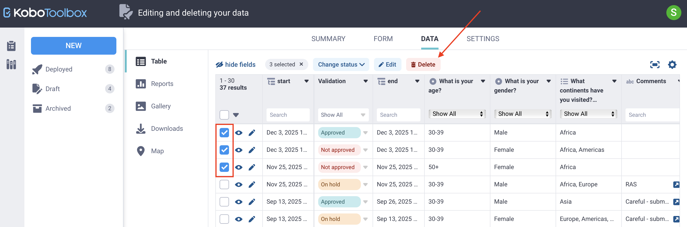

Search the knowledge base, browse our resources, and visit our forum for more detailed information
Last updated: 27 Jan 2026
Editing and deleting data helps maintain data quality after submissions are collected. You may need to correct individual responses, update multiple records at once, duplicate a submission, or remove records that are no longer needed. KoboToolbox offers several ways to manage these tasks, including editing submissions in Enketo, editing raw data directly, and applying bulk updates. This article explains each method and when to use it.
Note: Submissions collected with the KoboCollect app cannot be edited or deleted in KoboCollect after they are submitted. All post-submission changes must be made in KoboToolbox.
Project owners can control data access by assigning separate permissions to view, edit, validate, and delete submissions. For example, they can allow some team members to edit data while restricting deletion permissions.
To learn more about user-level permissions for editing and deleting data, see Sharing projects with user-level permissions.
KoboToolbox offers two editing approaches, each designed for different use cases. Understanding how they differ helps you choose the safest and most appropriate method for updating data.
The two methods for editing submissions in KoboToolbox are:
Editing submissions in Enketo: Opens the submission in Enketo so you can correct responses and resubmit the form. This method is recommended when form logic needs to be applied.
Editing raw data directly in KoboToolbox: Opens a data editor that lets you modify specific responses directly. This method is recommended when you need precise control over edits and do not need form logic to apply.
Each method comes with its advantages and limitations:
Editing method |
Advantages |
Limitations |
|---|---|---|
Editing in Enketo |
|
|
Editing raw data |
|
|
Note: When editing data using either method, the _uuid metadata field is updated each time a change is saved. When editing in Enketo, the end field is also updated. All other metadata fields remain unchanged, including _id, start, today, _submission_time, and _submitted_by.
This method opens a submission in Enketo so you can correct responses.
To edit a submission in Enketo:
In the submission row, next to the checkbox, click Edit. The submission opens in an Enketo web form.
Make the necessary changes.
Click Submit.
All updates, including recalculated fields and updated metadata, appear in the data table.

Note: Because this method reopens and resubmits the form, it can unintentionally change other fields, particularly those affected by skip logic or calculations. It also uses the most up-to-date version of the form. As a result, you may need to provide responses for newly added questions, and any responses to questions that have been removed from the form will be deleted.
This method lets you bypass form logic and edit stored responses directly without reopening the form. It is useful when changes cannot be made in Enketo, for example, if form logic prevents resubmission or newly required questions need responses.
To edit raw data in KoboToolbox:
Select the submission using the checkbox.
Click Edit above the data table.
In the edit window, click Edit next to the field you want to change and enter the new value.
For select type questions, enter one or more valid XML values, separated by spaces.
Click Save, then Confirm & close.

Note: It is recommended to track data edits in an external log or a dedicated comments field. Edits cannot be undone, but they can be modified again later.
When working with large datasets, you may need to update multiple records at the same time. Bulk editing helps correct systematic errors, fill in missing information, and standardize responses across many submissions. This approach reduces repetitive work and speeds up the data cleaning process.
You can edit multiple submissions in bulk using the raw data editing method in KoboToolbox:
Select the submissions you want to edit using the checkboxes.
Click Edit above the table. A window opens showing responses for all selected submissions.
Click Edit next to the field you want to update.
Enter a new value, or click Select to apply an existing value across all selected submissions.
Click Save, then Confirm & close.

Note: You can select all submissions on the current page by clicking the checkbox in the table header. To select all submissions in the project across all pages, click the arrow next to the checkbox and choose Select all results.
You can duplicate a submission using the following steps:
In the submission row, next to the checkbox, click View.
In the top right corner of the submission window, click Duplicate.
The duplicated submission opens in a new window, where you can Edit or Discard it as needed.

Note: When duplicating a submission, the response data is copied, but the validation status is reset. Metadata fields are updated to reflect the new submission, including start, end, today, _id, _uuid, _submission_time, and _submitted_by.
Deleting data permanently removes records from your project and should be done with care. You may need to delete submissions when removing duplicates, cleaning test data, or addressing data quality issues. KoboToolbox allows you to delete individual submissions or multiple submissions at once.
Select the submission(s) you want to delete.
Click Delete above the data table.
Confirm the deletion.
Deleted submissions are permanently removed and cannot be recovered.

Note: You can use project history logs to track edits and deletions by project users.
In some cases, you may want to remove responses for a single field without deleting the entire submission. This can be useful for data anonymization, for example, when removing personally identifiable information after it has been stored securely.
There is no dedicated option to delete a single field value. Instead, you can clear or replace the value using the following approach:
Select the submission(s) you want to update.
Click Edit above the data table.
Click Edit next to the field you want to clear, then enter a space or a replacement value such as “deleted” or “N/A”.
Click Save, then Confirm & close.
latitude longitude altitude accuracy. For example, the coordinates for Paris would be 48.8566 2.3522 0 0. Did you find what you were looking for? Was the information clear? Was anything missing?
Share your feedback to help us improve this article!